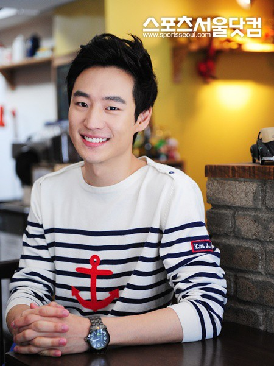
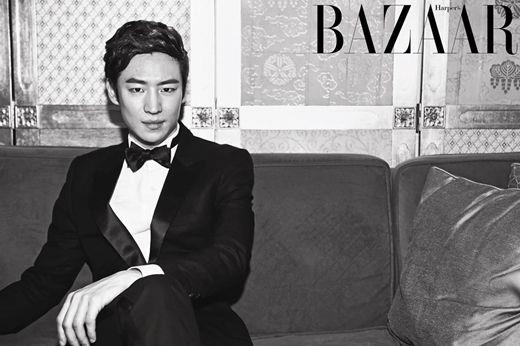
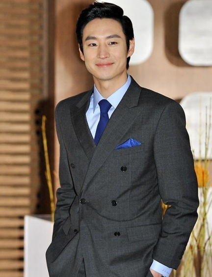
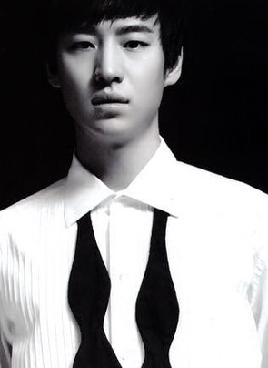
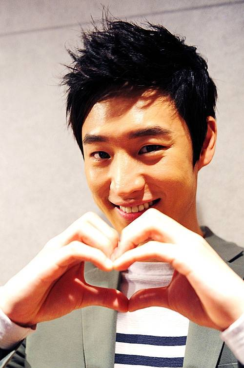
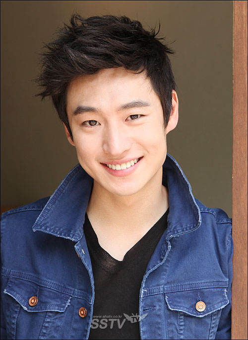
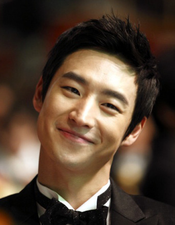

This is my love letter dedicated to my one and only obsession besides chocolate and ice cream. It is dedicated to Jae Hoon Lee, who I've been fan-girling about since the summer of 2012.
This is my love letter dedicated to my one and only obsession besides chocolate and ice cream. It is dedicated to Jae Hoon Lee, who I've been fan-girling about since the summer of 2012.
My level of obsession is pretty high; it used to be even higher. I even Photoshopped my face onto his picture, and I put so much effort to make it look realistic. I'm very proud of how it turned out.
He is a Korean actor. He was born in 1984 July the Fourth. (It's very easy to remember his birthday, right?) He studied bioengineering in Korea University but he dropped out to pursue what he really wants to do. So he attended Korea National University of Arts and studied acting there. He started his career as an actor in 2005, and he officially debuted through the screen in 2007.
First of all, obviously, he is handsome. If you think he is not handsome, well then, I will hate you forever.
   He is cute.

He is sexy.

And I love his smile. His smile makes me happy.
 I am obsessed with him not just because of his physical attractiveness. I admire him as one of my role models. I briefly went over this, but he used to be an engineering student in one of the most competitive school in Korea. In his junior year, he decided to change his path because engineering was not what he really wanted to do. He had always been interested in acting since he was young, so he decided to study acting. Of course his parents were not happy with his decision of becoming an actor, but he put so much effort and tried hard to achieve his current status as an actor. I know some actors would choose the roles and would only take the main characters, but he would take any role that was offered to him, no matter how insignificant it was. All he concerned about was how much he could learn and improve on his acting, not so much about him becoming famous and making money. It is true that I was attracted to his appearance at first, but as I research about him more, I could relate to him more because I had a similar experience before I came to MICA.
I was not pursuing art as my future career even though I was always interested in art. In my high school senior year, I applied to many schools as a non-art major, but I was not so sure about what to study in college yet. At the last minute, I wanted to take art seriously, so I came here. And even after I came here, I had hard time deciding my major. All I did was drawing and painting, and I never tried graphic design -I didn't even know what graphic design was. But I knew I was interested in marketing and advertising, and I heard that graphic design is somewhat related to my interests, so I took intro to graphic design as my elective in my freshman year, fell in love with it, and decided to study more about it.
He made his final decision when he was a junior in college, and his effort is finally paying him off. I made my decision in high school, which is way earlier than when he did. So if I try my best just like he did, then who knows, one day I might become a famous graphic designer? He is a great role model, and he inspires me to work hard.
One more thing to share: he likes to read! His favorite author is Yoshida Shuyichi, a Japanese writer. I like to read too and my favorite author is Kaneshiro Kazuki, another Japanese writer. Yes, we share a lot in common.
He was in many independence and short films in his earlier career. It is since 2011 that he appeared to a larger audience through bigger scale movies.
Lee plays a role as Ki-tae, one of the main characters of the film. The film is about three high school boys who thought their friendship would last forever. But they fall apart due to some misunderstandings, and Ki-tae commits suicide. This film is quite famous; it is Pusan IFF New Currents Award winner. And Lee got four awards, including the 48th Grand Bell Awards and the 32nd Blue Dragon Awards, both awarded as Rookie of the Year.
Bleak Night TrailerLee acted as the Young Captain Shin in The Front Line. This film takes place during the Korean War. He won The 31st Korean Association of Film Critics Awards as Rookie of the Year.
The Front Line: Captain ShinArchitecture 101 the first film of Jae Hoon Lee that I watched. This movie takes place in two different time settings, back in the 90s and the present, and the story is about an architecture student who falls in love with this girl who studies piano. Jae hoon lee acted as the main character from the past. He became a lot more famous through this movie, and he won the 16th Puchon IFFF Actor of the Year and the 6th Mnet 20's Choice Hot Movie Star Award.
Architecture 101 TrailerLee also dubbed the Korean version of Jack Frost in Rise of the Guardians.
Rise of the Guardians: Korean DubbingLee is not afraid of trying new characters, and these experiences helped him to become a better actor. He acted as a psycho who wire-tapped a college girl in the movie An Ethics Lesson (2013). He acted as a high school opera singer in My Paparotti (2013). And he even acted as a gay in a short film Just Friends? (2009).
Jae Hoon Lee is currently in military, serving in a combat police force since October 25th 2012. He will be discharged by next year, so I am waiting for him to come back.